Fichas de Geografía
92 fichas de Geografía en español para imprimir (PDF), sin preparación y con solucionario: comprensión lectora, búsquedas del tesoro y más, filtrables por grado.
92 recursos
Grado
Por grado: 7.º grado (1.º de ESO) · 5.º de primaria
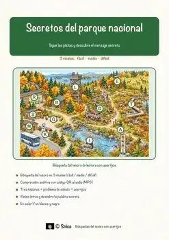
«Secretos del parque nacional» – Búsqueda del tesoro de lectura
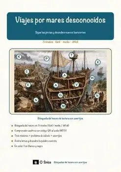
«Viajes por mares desconocidos» – Búsqueda del tesoro de lectura

Países hispanohablantes – Spanish Reading BUNDLE | Spanish-Speaking Countries

Trojanisches Pferd – Ficha de lectura: texto con huecos, comprensión auditiva y sopa de letras

Torre de televisión de Berlín – Ficha de lectura: texto con huecos, comprensión auditiva y sopa de letras

Sozialdemokratie – Ficha de lectura: texto con huecos, comprensión auditiva y sopa de letras

Lago salado – Ficha de comprensión lectora primaria: texto con huecos y sopa de letras

Río Elba – Ficha: texto con huecos, comprensión auditiva y sopa de letras

Las aventuras de Alicia en el país de las maravillas – Ficha: texto con huecos, comprensión auditiva y sopa de letras

Capital Europea de la Cultura – Ficha: texto con huecos, comprensión auditiva y sopa de letras

Río Bravo – Ficha: texto con huecos, comprensión auditiva y sopa de letras

Pueblos germánicos – Ficha: texto con huecos, comprensión auditiva y sopa de letras

Océano Atlántico – Ficha: texto con huecos, comprensión auditiva y sopa de letras

Montañas de arenisca del Elba – Ficha: texto con huecos, comprensión auditiva y sopa de letras

Monstruo del lago Ness – Ficha: texto con huecos, comprensión auditiva y sopa de letras

Lago de Constanza – Ficha: texto con huecos, comprensión auditiva y sopa de letras

Lago Baikal – Ficha: texto con huecos, comprensión auditiva y sopa de letras

La isla del tesoro – Ficha: texto con huecos, comprensión auditiva y sopa de letras

Municipio – Ficha de lectura: texto con huecos, comprensión auditiva y sopa de letras

Esch-sur-Alzette – Ficha de lectura: texto con huecos, comprensión auditiva y sopa de letras

Región del Ruhr – Ficha de lectura: texto con huecos, comprensión auditiva y sopa de letras

Cordillera – Ficha de lectura: texto con huecos, comprensión auditiva y sopa de letras

Colonia administrativa – Ficha de lectura: texto con huecos, comprensión auditiva y sopa de letras

América – Ficha de lectura: texto con huecos, comprensión auditiva y sopa de letras

Paz de Westfalia – Ficha de lectura: texto con huecos, comprensión auditiva y sopa de letras

Islandia – Ficha: texto con huecos, comprensión auditiva y sopa de letras

Mánchester – Ficha de lectura: texto con huecos, comprensión auditiva y sopa de letras

Manga – Ficha de lectura: texto con huecos, comprensión auditiva y sopa de letras

Lago Chiem – Ficha de lectura: texto con huecos, comprensión auditiva y sopa de letras
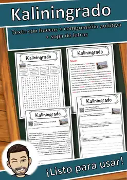
Kaliningrado – Ficha de lectura: texto con huecos, comprensión auditiva y sopa de letras
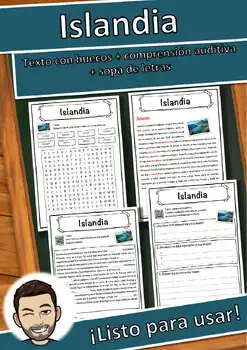
Islandia – Ficha de lectura: texto con huecos, comprensión auditiva y sopa de letras
Irlanda – Ficha de lectura: texto con huecos, comprensión auditiva y sopa de letras
Emilio y los detectives – Ficha de lectura: texto con huecos, comprensión auditiva y sopa de letras
Corea – Ficha de lectura: texto con huecos, comprensión auditiva y sopa de letras
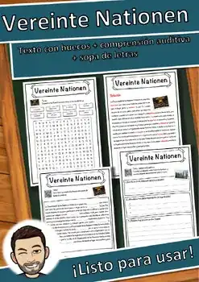
Naciones Unidas – Ficha de lectura: texto con huecos, comprensión auditiva y sopa de letras
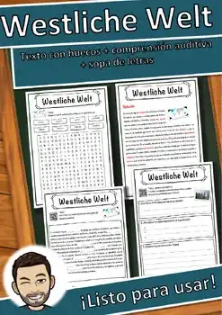
Mundo occidental – Ficha de lectura: texto con huecos, comprensión auditiva y sopa de letras
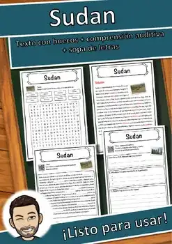
Sudan – Ficha de lectura: texto con huecos, comprensión auditiva y sopa de letras
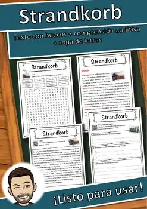
Strandkorb (silla de playa) – Ficha de lectura: texto con huecos, comprensión auditiva y sopa de letras
Sauerbraten renano – Ficha de lectura: texto con huecos, comprensión auditiva y sopa de letras
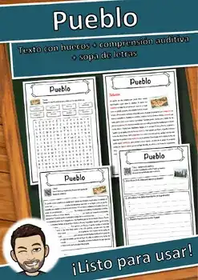
Pueblo – Ficha de lectura: texto con huecos, comprensión auditiva y sopa de letras
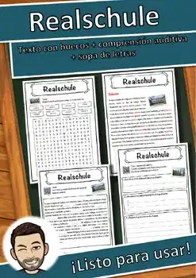
Escuela secundaria intermedia – Ficha de lectura: texto con huecos, comprensión auditiva y sopa de letras
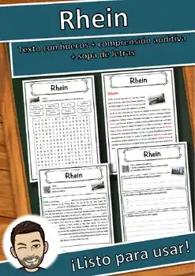
Rin – Ficha de lectura: texto con huecos, comprensión auditiva y sopa de letras
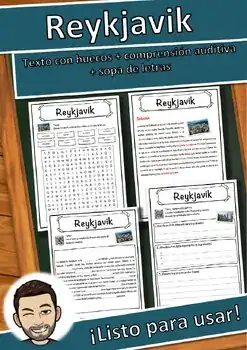
Reykjavik – Ficha de lectura: texto con huecos, comprensión auditiva y sopa de letras
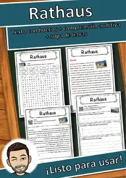
Ayuntamiento – Ficha de lectura: texto con huecos, comprensión auditiva y sopa de letras
Oggy y las cucarachas – Ficha de lectura: texto con huecos, comprensión auditiva y sopa de letras
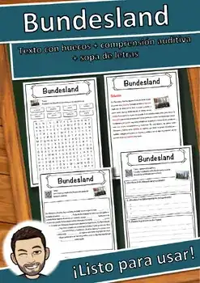
Estado federado – Ficha de lectura: texto con huecos, comprensión auditiva y sopa de letras
Bielorrusia – Ficha de lectura: texto con huecos, comprensión auditiva y sopa de letras
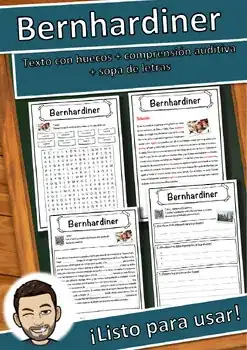
Perro San Bernardo – Ficha de lectura: texto con huecos, comprensión auditiva y sopa de letras
No se encontraron recursos. Prueba con otra palabra o con otro filtro.